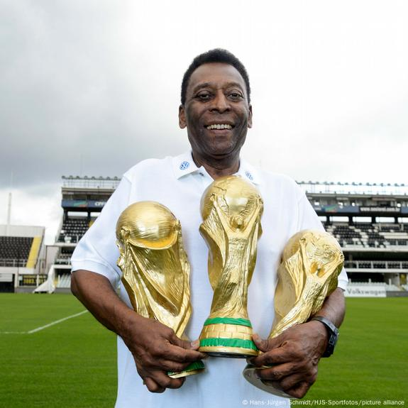

Pelé
"The King of Football" – 3x World Cup champion and a global icon of the game.

Neymar Jr.
Known for his flair, creativity, and game-changing goals.
Marta
6x World Player of the Year – the face of women’s football.
Ronaldinho
A magician with the ball, famous for his tricks and joyful style.
Alisson Becker
Brazil’s brick wall – calm, confident, and clutch in goal.